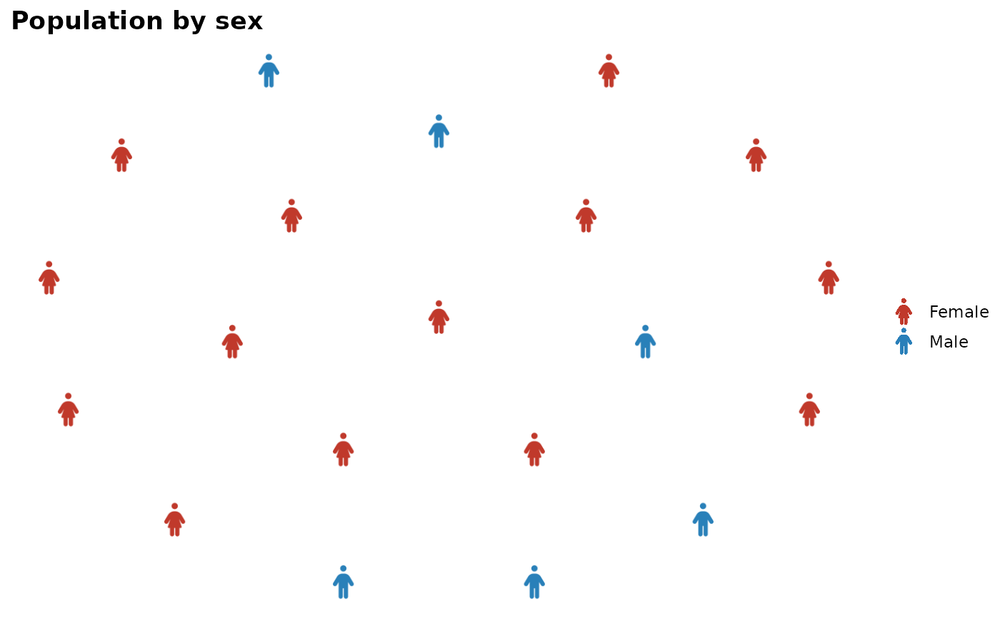
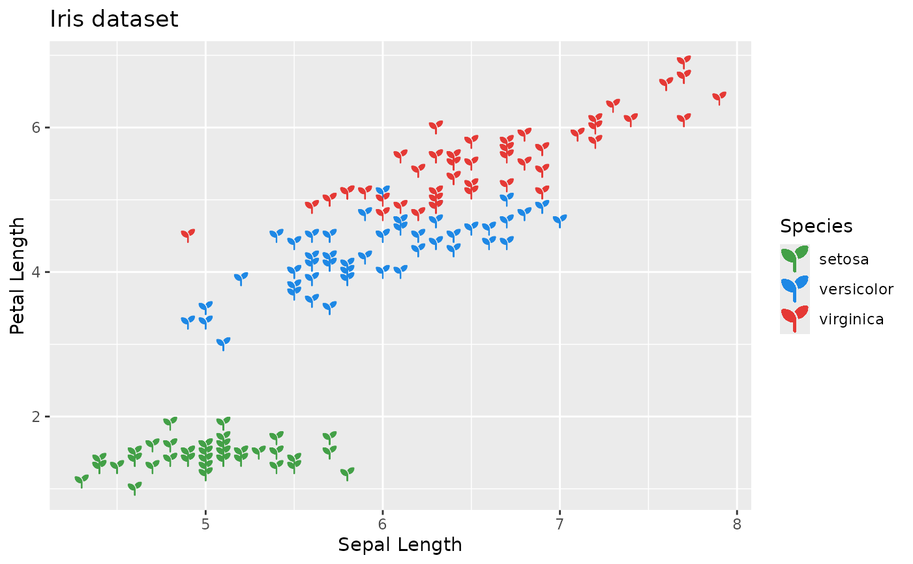

ggpop is a ggplot2 extension for creating icon-based population charts
and pictogram plots. Use geom_pop() and geom_icon_point() to visualize
proportion and population data with 2,000+ Font Awesome icons.
Main functions
geom_pop()– proportional icon gridsgeom_icon_point()– icon scatter plotsprocess_data()– prepare count data for plottingfa_icons()– search Font Awesome icon namestheme_pop(),theme_pop_dark(),theme_pop_minimal()– built-in themes
process_data()
Converts count data to one row per icon. group_var and sum_var are
unquoted; high_group_var takes a character string for faceted charts.
df_plot <- process_data(
data = data.frame(sex = c("Female", "Male"), n = c(55, 45)),
group_var = sex,
sum_var = n,
sample_size = 20
)geom_pop()
Draws icon grids. Add an icon column, map icon and color in aes().
Do not map x or y.
geom_icon_point()
Drop-in replacement for geom_point() using Font Awesome icons.
ggplot(iris, aes(x = Sepal.Length, y = Petal.Length, color = Species)) +
geom_icon_point(icon = "seedling", size = 1)Themes
Three built-in themes optimized for icon charts:
theme_pop(), theme_pop_dark(), theme_pop_minimal().
Author
Maintainer: Jorge A. Roa-Contreras jorgeroa@stanford.edu (ORCID)
Authors:
Ralitza Soultanova Ralitza.soultanova@gmail.com (ORCID)
Fernando Alarid-Escudero falarid@stanford.edu (ORCID)
Carlos Pineda-Antunez cpinedaa@uw.edu (ORCID)
Examples
library(ggplot2)
library(dplyr)
#>
#> Attaching package: ‘dplyr’
#> The following objects are masked from ‘package:stats’:
#>
#> filter, lag
#> The following objects are masked from ‘package:base’:
#>
#> intersect, setdiff, setequal, union
## -------------------------------------------------------
## geom_pop(): population icon grid
## -------------------------------------------------------
df_plot <- process_data(
data = data.frame(sex = c("Female", "Male"), n = c(55, 45)),
group_var = sex,
sum_var = n,
sample_size = 20
) %>%
mutate(icon = ifelse(type == "Female", "person-dress", "person"))
ggplot() +
geom_pop(data = df_plot, aes(icon = icon, color = type), size = 2) +
scale_color_manual(values = c(Female = "#C0392B", Male = "#2980B9")) +
theme_pop() +
labs(title = "Population by sex", color = NULL)

## -------------------------------------------------------
## geom_icon_point(): icon scatter plot
## -------------------------------------------------------
ggplot(iris, aes(x = Sepal.Length, y = Petal.Length, color = Species)) +
geom_icon_point(icon = "seedling", size = 1) +
scale_color_manual(values = c(
setosa = "#43A047",
versicolor = "#1E88E5",
virginica = "#E53935"
)) +
labs(title = "Iris dataset", x = "Sepal Length", y = "Petal Length")
